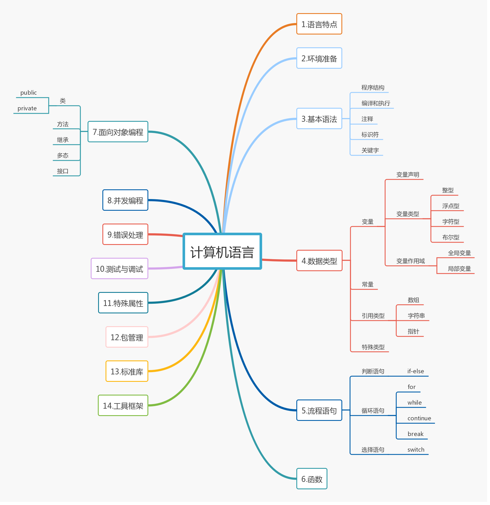

概述
目录索引
Golang资源
计算机语言概述
后端开发技能树
本书使用 GitBook 发布
计算机语言概述
1. 计算机语言概述
学习一门计算机语言，将计算机语言分为以下几大部分：
语言特点
环境准备
基本语法
数据类型
变量
常量
引用类型
流程语句
判断语句
循环语句
选择语句
函数
面向对象编程
封装（类与方法）
继承
多态（接口）
并发编程
特殊属性
包管理
标准库
2. 思维导图

results matching "
"
No results matching "
"